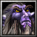

| Клавиша | Название | Тип | Развеивается |
|---|---|---|---|
| Q | Звериный рёв | Активная | Нет |
| W | Вороны | Активная | Нет |
| E | Омоложение | Активная | ⚠ Да |
| R | Покой | Ультимейт | ⚠ Да |
| F | Кровожадность | Активная | Нет |
Ради 5% шанса мгновенного сброса R. Покой — 105 сек кулдаун. Каждый шанс использовать его дважды за драку — это огромно.